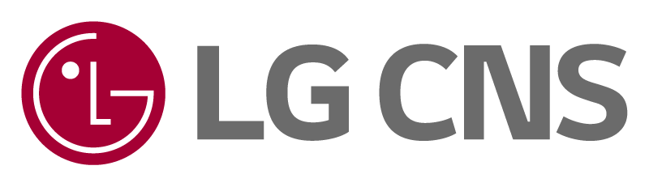

REQUEST
요청 입력
한 번의 요청으로 답변을 만들고, 필요한 경우 Tool을 실행한 결과를 함께 반환합니다.
Result
실행 결과
최종 응답과 Tool 실행 결과를 한 화면에서 확인합니다.
대기 중
아직 실행 결과가 없습니다. 왼쪽 입력창에 요청을 작성하고 실행 버튼을 누르세요.

세션 없이 요청 1건을 실행하고, 최종 응답과 Tool 결과만 바로 확인합니다.
한 번의 요청으로 답변을 만들고, 필요한 경우 Tool을 실행한 결과를 함께 반환합니다.
최종 응답과 Tool 실행 결과를 한 화면에서 확인합니다.